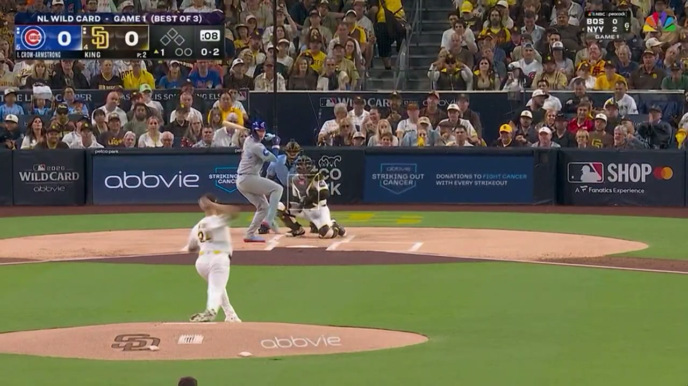

BEYOND THE BOX SCORE
다음 공,
다음 공,
무엇이 최선일까?
기록으로 계산한 추천과 실제 선택.
한 구에 담긴 경기 상황을 함께 읽습니다.

MLB · RECORDEDCHC vs SD1회 초 · 4투구 하이라이트
미검토 AI 미트 가로 추정−0.05 ft
4투구 하이라이트 · 약 24초
2026 NL WILD CARD / GAME 1 현지 2026.09.29 · 한국 09.30 · PETCO PARK시카고 컵스 @ 샌디에이고 파드리스
THE GAMES
실제 경기에서
저장 경기 · 71타석 / 262구
실제 경기에서
출발합니다.
CHC @ SD
컵스 · 파드리스현지 2026.09.29 · 한국 09.30 · NL 와일드카드 1차전
추천 246구 · 미지원 16구 · 영상 연결 261구
CV 연구 자료 01PHI @ ATL
필리스 · 브레이브스2026.09.29 · NL 와일드카드 1차전
Truist Park · 57장 평가
CV 연구 자료 02TB @ PHI
레이스 · 필리스2026.09.26 · 정규시즌
Citizens Bank Park · 29장 평가
FOLLOW THE PITCH
안타 한 개로,
안타 한 개로,
모든 판단을 끝내지 않도록.
경기 상황과 선택을 팬이 이해하도록.
추천을 먼저 보고, 실제 결과를 확인합니다.
01 / SELECT
한 타석을 고르다.
경기·선수·카운트를 확인하고 실제 경기 재생을 시작합니다.
경기 선택 →02 / RECOMMEND다음 공의 후보.
모델의 저장된 추천 구종과 과거 투구 분포의 근사 위치를 봅니다.
추천 후보 보기 →03 / COMPARE추천과 실제 공.
실제 구종·플레이트 통과 위치·판정을 공개하고, 연결된 영상은 함께 재생합니다.
영상과 결과 보기 →04 / UNDERSTAND숫자의 근거까지.
결과 예측의 평가와 추천 효과의 평가를 구분해 읽습니다.
모델 검증 기록 →현재 제공하는 71타석·262구는 저장된 실제 경기 재생입니다. 공식 영상은 261구에 연결돼 있습니다. 기록이 다른 1구는 영상 연결을 보류했습니다. 추천 비중은 결과 확률이 아니며, 없는 확률이나 선수·감독 평가를 예시 숫자로 채우지 않습니다.
MODEL & EVIDENCE
추천의 뒤에는,
추천의 뒤에는,
기록과 검증이 있습니다.
MLB 투구 기록으로 결과 확률을 추정하고
후보 구종의 가치를 비교하는 추천 모델.
예측 성능과 실제 추천 효과를 따로 평가합니다.
−0.0137
빈도 기준선 대비 예측 오차(NLL) 감소
2025 개발 자료 311,721구
0.13초
개발 자료의 예측 개선과 별도 시험의 계산 시간입니다.
추천에 따른 승리확률 향상은 확인되지 않았으며, 화면까지의 전체 지연을 뜻하지 않습니다.
추천 계산 시간 중앙값
별도 10/2 라이브 리허설
이제, 한 구를 직접 살펴보세요.
경기 선택하기실제 MLB 기록 · 저장 추천 · 영상과 결과 비교